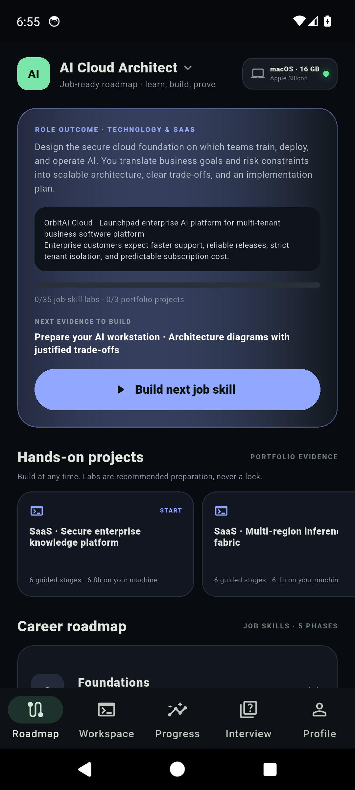
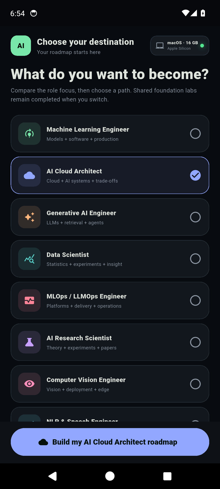

Understand
Visual explanations, datasets, worked examples and architecture diagrams establish the mental model.
A career lab in your pocket
Learn the concept visually. Run every command with context. Build realistic systems. Then practise explaining your decisions like a professional.
Currently distributed through Google Play closed testing. Public availability follows testing approval.


From curious to credible
Every topic follows one continuous product-company story so you understand what a team is building, why it matters, how it works, and how to defend the choices in an interview.
Visual explanations, datasets, worked examples and architecture diagrams establish the mental model.
Run guided commands one step at a time, see expected output and understand what changes in the system.
Turn the skill into an end-to-end product project with data, APIs, cloud choices, monitoring and trade-offs.
Practise technical, system-design and project questions using evidence from the work you completed.
See the experience
See career selection, connected explanations, guided terminals, real-world architecture and role-specific preparation inside the Android app.
Choose where you are going
Switch paths whenever your goal changes. Shared foundations carry forward while the roadmap, labs, projects and interview practice adapt to the role.
Models, features, APIs and production systems
Scalable, secure and cost-aware AI platforms
LLMs, RAG, agents, evaluation and guardrails
Experiments, insight, statistics and prediction
Delivery, observability and model operations
Research methods, papers and experimentation
Images, video, detection and deployment
Language, search, speech and conversations
Discovery, metrics, risk and AI product strategy
Safety, governance, privacy and threat models
Inside the app
AI CareerLab shows the work behind the command—not just a terminal animation. Follow the dataset, transformation, architecture, output, runtime and project decision in context.
Move from foundations to role-specific systems, projects and interview proof without wondering what to learn next.
Real-world project experience
Start with a product brief and business constraint. Inspect the data. Make architecture choices. Implement the pipeline. Test failure cases. Monitor quality and cost. Finish with a portfolio story and interview-ready explanation.
Learner feedback
AI CareerLab is currently in closed testing. Verified learner feedback will appear here as it is submitted—never invented, never attributed to fictional users.
Try the closed-test build, work through a path, then tell us what helped and what should improve.
Review policy: only feedback from real learners is published. Feedback may be shortened for clarity with the reviewer’s meaning preserved.
One purchase. A complete career lab.
Explore every included career path, concept story, lab, project and interview track at your own pace.
No recurring subscription
JOIN THE TEST ONGoogle PlayLifetime access applies to the purchased app version. Availability and local price are shown by Google Play.Before you start
Clear answers about access, learning and career outcomes.
No. AI CareerLab provides structured education, hands-on practice, portfolio guidance and interview preparation. Employment depends on your practice, experience, market conditions and employer decisions.
Your one-time purchase gives lifetime access to the app version you purchased. It is not a recurring subscription. Future separately sold editions or services are not automatically included.
Yes. You can switch among all 10 included paths. Shared foundations help you retain progress while role-specific roadmaps focus your next steps.
The Android app teaches PC and Mac workflows through guided, realistic command sessions. It explains each command, expected output, timing, machine requirements and troubleshooting so you can repeat the work on your own computer.
The app is in Google Play’s testing phase before public production release. Eligible testers can opt in with the button on this page and install using the same Google account.
No account is required for the included learning experience. Learning preferences and progress are designed to remain on your device.
Your next role starts with the next step
Join the Android closed test and start turning AI knowledge into work you can confidently explain.
GET STARTED ONGoogle Play